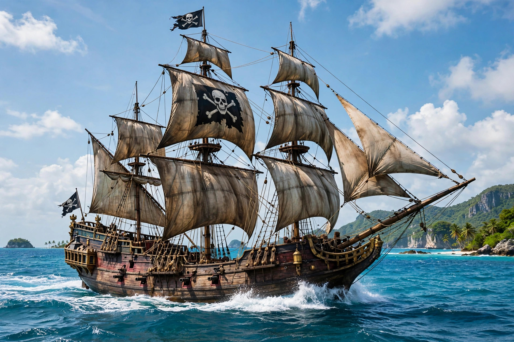

From Wikipedia, the free encyclopedia

Piracy is an act of robbery or criminal violence by ship- or boat-borne attackers upon another ship or a coastal area, typically with the goal of stealing cargo and other valuable goods. Those who conduct acts of piracy are called pirates, and vessels used for piracy are called pirate ships. Under the United Nations Convention on the Law of the Sea, piracy consists of illegal acts of violence, detention, or depredation committed for private ends on the high seas or in places outside any state's jurisdiction.
Piracy is nearly as old as seafaring itself: it plagued the ancient Mediterranean, where Pompey the Great was given an extraordinary command in 67 BC to clear the Cilician pirates, and the Vikings raided coasts across early medieval Europe. The "Golden Age of Piracy" (roughly 1650–1730) flourished in the Caribbean and the Atlantic amid colonial rivalry, producing famous figures such as Blackbeard, Bartholomew Roberts, and Anne Bonny. The Barbary corsairs of North Africa preyed on Mediterranean and Atlantic shipping until the early nineteenth century. Distinct from pirates were privateers, licensed by governments through letters of marque to attack enemy shipping.
Piracy resurged in the early twenty-first century off the Horn of Africa, where Somali pirates seized vessels for ransom, prompting multinational naval patrols, convoying, and embarked private security that sharply reduced successful attacks after about 2012. Other persistent hotspots include the Strait of Malacca and Southeast Asian waters, and the Gulf of Guinea, where attacks on tankers and kidnapping of crews remain a serious threat. Because pirates are considered hostis humani generis — enemies of all mankind — any state may exercise universal jurisdiction to seize and try them. The word "piracy" has also been extended metaphorically to unauthorised copying of media and software.